家に貯蓄していた柑橘が減ったのでハッサクを大量収穫しました。
2025/01/11
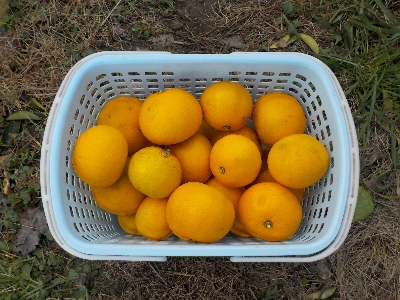
今シーズンはハッサクが大量にできたので沢山食べれます。
好きなので喜んで食べてます。
2025/01/11

今シーズンはハッサクが大量にできたので沢山食べれます。
好きなので喜んで食べてます。
2024/12/31
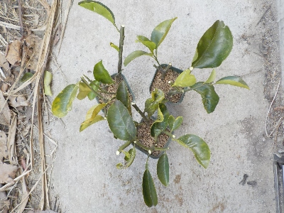
温州みかんはよく挿し木をやっていて毎回失敗していますが、ハッサクの挿し木は初めてです。
今日は剪定していて枝が沢山あったのでやってみました。
2022/12/04
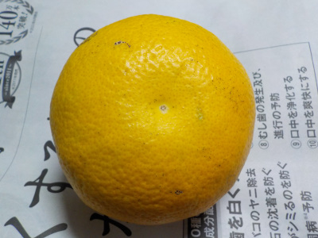
落ちてた青いハッサクが黄色くなったので食べることにしました。苦いとか酸っぱいと嫌だなと思いながらハッサクを食べました。
ちょっと味が薄いですが、美味しかったです。捨てずに拾って帰って良かったです。
2022/11/20
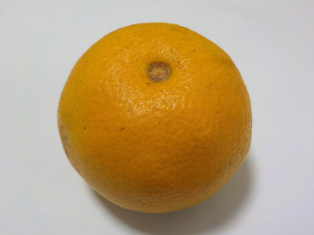
ハッサクが一つ木から落ちていました。まだ収獲の時期じゃないので熟れていません。
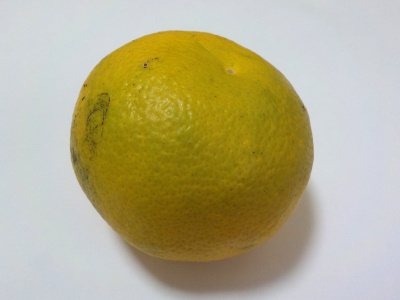
裏側はとても青い。これはきっと酸っぱそうです。
でも捨てるのはもったいない。このまま置いておいたら追熟するかもしれないので、しばらくしてから味見しようかと思っています。
2020/06/07
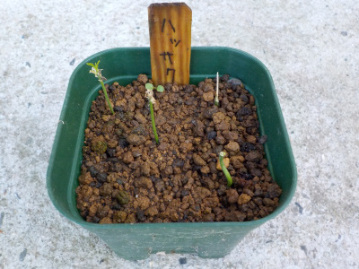
何者か分からないですが、葉っぱを全部食べられてしまいました。
まだ小さい苗なので復活は無理かな。
2020/04/18
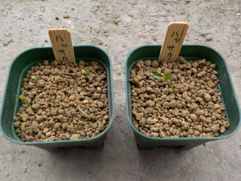
1つは1本だけで、もう1つは残りの苗を全部植えました。
2020/03/19
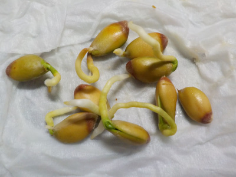
根っこが伸びたものは個別にお茶パックの植え替えしました。
何本育てようか考え中です。5本もあればいいかな。
2020/01/04
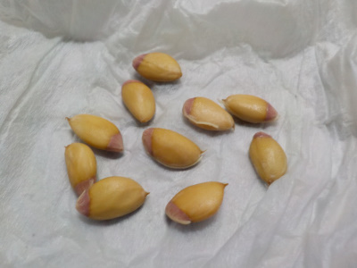
去年は途中で止めたハッサクの実生ですが、また育ててみたくなりました。
とりあえず湿ったキッチンペーパーで包んでいます。
2019/07/06
みかんの種を育てていましたが、挿し木のほうがいいかなと思い止めることにしました。
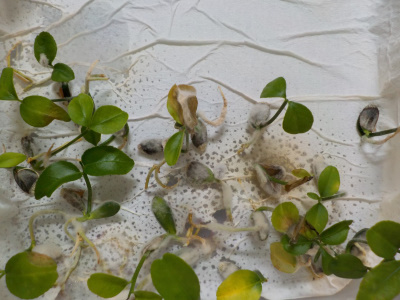
挿し木が成功するかは分かりません。
確率は低いみたいです。でも、もしできたら楽に増やせていいですよね。
2019/04/07
みかんを食べました。
家で採れたミカンを食べました。ハッサクかな？
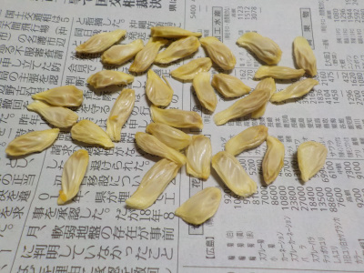
1個で種がこれだけ取れました。
台木用に育ててみようかと思っています。
外側の皮をむいて水に浸けたら発芽するかな。
ハッサクが葉っぱでこんもりとなりました。2014/05/31
ハッサクが木らしくなりました。2013/04/13
ハッサクガ急成長しました。2012/10/27
ハッサクの勢いがいいです。2012/07/28
ハッサクの葉を芋虫が食べていました。2012/06/10
雑草の中で生きています。2012/04/21
野生化していました。2011/09/10
地植えで育てています。2011/05/04
最初の冬を越えました。2011/03/12
ハッサクが成長しました。2010/10/23
鉢を大きくしました。2010/07/24
ハッサクの成長が早いです。2010/05/29
１週間でだいぶ大きくなりました。2010/05/16
ハッサクの芽が出ました。2010/05/09
八朔の種を蒔きました。2010/03/13
【ハッサクTOP】
【果物TOP】
【園芸TOP】
畑仕事じゃないよ。